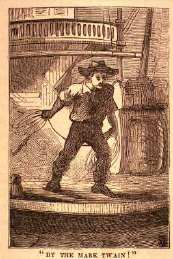

|
 By clicking on the image at left, you can go to the site's search engine. If you're not already familiar with the conventions for using it, you should begin by writing "Connecticut Yankee" into the window that lets you specificy a MT text to search. You can then search the novel for any word or phrase you'd like. Try several different ones -- "catholic," for example, and "church." The search program is not case sensitive -- i.e. "church" and "Church" return the same results -- but it is very literal: it will find every instance of the exact combination of letters you ask for, but not approximations of the word. So, for example, if you type in "catholic," it will also find "catholicism" (because that combination of letters is in "catholicism") but not vice versa. If you type "the church," it will not find "the established church" or "a church," though "church" will find all those variants. |